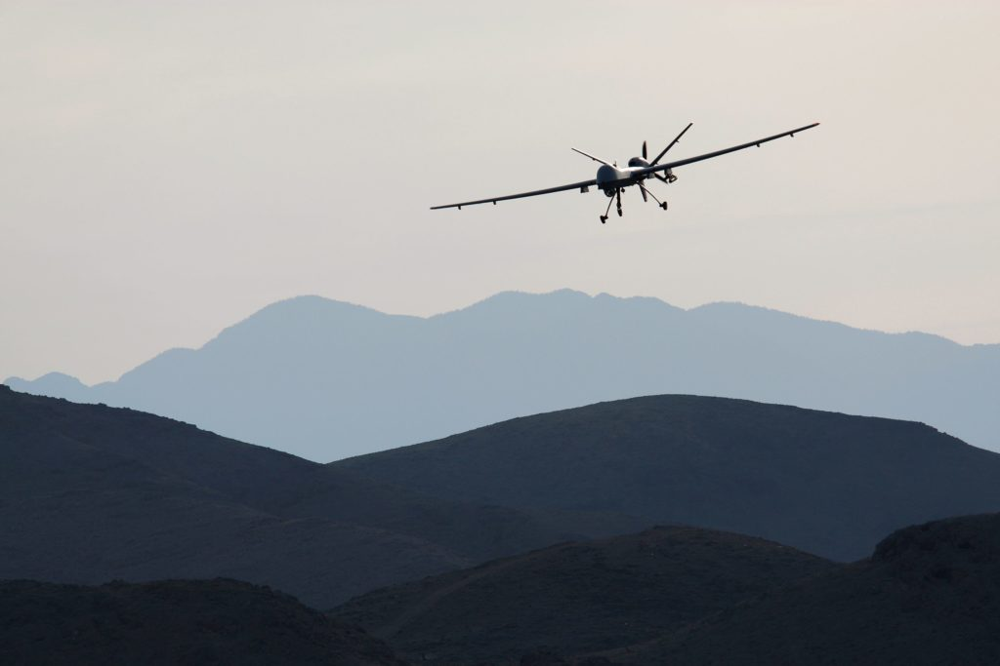

有可信证据显示美国在索马里规模迅速扩大的空袭导致多名平民丧生，国际特赦组织在近日发布的新报告中表示，美国政府须就这些可信证据展开公正及全面的调查。


收割者无人机 © Getty Images
《隐藏于索马里境内的美国战火》（The Hidden US War in Somalia）详细记载了在过去两年逾100次的空袭中，当中5次如何令14名平民丧生及另8人受伤。在这5次事件中，美国以名为“收割机”的无人机及载人机于下谢贝利州（Lower Shabelle）发动空袭，该地区位于索马里首都摩加迪沙外，主要由青年党（Al-Shabaab）控制。这些空袭似乎已经违反了国际人道法，其中一些或构成了战争罪。
在国际特赦组织的调查结果面前，美国非洲司令部（AFRICOM）反复否认其在索马里的军事行动造成了任何平民死亡。
国际特赦组织武器及军事行动资深危机顾问布莱恩·卡斯纳法（Brian Castner）指出：“我们在仅仅一部分空袭中所发现的平民死亡人数显示，美国在索马里战争中所扮演的角色笼罩了神秘面纱，而这实际上是令该国逍遥法外的障眼法。”
“我们的调查发现与美国军方所称的在索马里没有任何平民伤亡的言论恰恰相反。当你知道美国自2016年以来对索马里的空袭增加了两倍，超过了对利比亚和也门发动的空袭量总和时，那样的说法更显得荒唐。”
在调查过程中，国际特赦组织的研究员前往索马里，与目击者、亲属、因冲突而流离失所的人及包括美国军方在内的专家进行了逾150次访谈；我们亦仔细分析了卫星图像、弹药碎片及空袭后拍摄的照片等补强证据。
特朗普削弱防护措施后空袭激增
自特朗普总统在2017年3月30日签署了一份行政命令，宣布索马里南部为“敌对行动区”后，美国政府在索马里发动的空袭激增。
美军在2017年的最后9个月里对索马里发动了34次空袭，这一数量超过了美国在2012至2016年整整5年间所发动的空袭量之和。2018年，空袭数量继续上升至47次，并且，仅仅是2019年的头两个月，美国便已发动了24次空袭。
据国际特赦组织访问的一名美军退休准将所说，特朗普的行政命令减轻了美军在保证空袭不会令平民丧生方面的负担。令人担忧的是，这名准将亦认为该行政命令扩大了空袭的潜在目标，使它实际上包含了村庄里任何认同青年党并被视为接近战斗人员的成年男性。这种攻击目标如此宽泛的命令违反了国际人道法，并导致平民被非法杀害。
平民伤亡的证据确凿
国际特赦组织发现有力证据，显示美军发动的5起空袭或已违反国际人道法，在某些情况下更构成战争罪。这些空袭共造成14名平民丧生，8名平民受伤。由于我们缺乏确凿证据证明其他空袭造成了更多平民伤亡的报告，因而未被收录于本报告中。
在其中一起事件中，美军于2017年11月12日凌晨对达鲁萨兰村（Darusalaam）附近的农田发动空袭，结果导致当地至少3名农民死亡。当时他们是在挖掘灌溉渠至深夜后，正在空地上休息。
约凌晨3点，空袭在没有发出警报的情况下击中了他们。爆炸让其他农民匆忙寻找掩护，并惊醒了附近两条村的居民。于破晓时分前去找回尸体的村民描述了这几名男子可怕的伤势。
达鲁萨兰村的一名农民告诉国际特赦组织：“在袭击发生那天，飞机发出的嘈杂音比往常更大。前几周，飞机来了又走，只是那晚，飞机没有离开，而是不停地飞来。当[空袭]声响起时，一切都停顿了……我感到很害怕，完全无法看到田地了。我跑到树荫下躲了起来……那3人没有想到会被飞机炸死，我们也没想到世界会一片沉寂。”
在另一起事件中，包括两名儿童在内的5名平民于2017年12月6日因一辆疑似属于青年党的卡车驶经以利梅（Illimey）的小村庄时发生爆炸而丧生。卫星图像显示，多达10处建筑物因爆炸及其导致的大火而部分损伤。
其中一名死者的朋友在14公里开外的法索雷村（Farsoley）听到了传来的爆炸声：“声音很大……不到5分钟，我便看到大量的黑烟升了上来。我们都说，有什么恐怖的事情发生了……我急忙跑去现场……[卡车]被彻底毁了，整个村子都烧了起来，附近的树也都着火了，[卡车]被击中的地方有一个巨大的窟窿。”
尽管美国非洲司令部断然否认在以利梅发动过空袭，但有力证据显示是次空袭确有发生，而美国安全机关或对此负责。
艾拉·奈特 美国政府必须确保对有平民伤亡的可信指控展开调查，将实施侵犯行为者绳之以法，并对受害者及幸存者进行赔偿。
媒体报道及多名目击者表示，爆炸发生时，有炮火从空中射向该卡车。目击者回忆称目睹或听到一架飞机在袭击发生之前或之后经过，而国际特赦组织审视的卫星图像也与之相符，显示空袭是爆炸发生的原因。
可能更高的死亡数字
据了解，美军在国际特赦组织进行调查的时间内在索马里发动了另外76起空袭，并在2019年头两个月内发动了24起空袭，因此，平民伤亡数字很有可能更高。
对于受到美军空袭影响的索马里人而言，讨回公道的可能性微乎其微。鉴于空袭发生的地点及可能涉及的风险，哪怕是报告家人或社区成员的死伤亦近乎是不可能的。
国际特赦组织军事、安全及警察问题研究员艾拉·奈特（Ella Knight）表示：“美国政府必须确保对有平民伤亡的可信指控展开调查，将实施侵犯行为者绳之以法，并对受害者及幸存者进行赔偿。”
“美国及索马里两国政府需终止缺乏透明度的做法，并采取更多措施确保受影响的社区能够自行报告平民伤亡事件，若非如此，公义便依然遥不可及。”